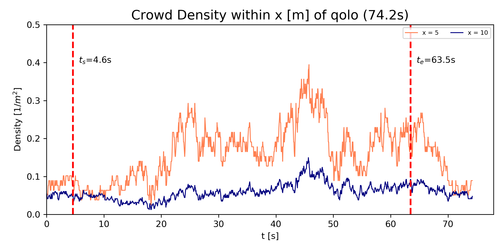
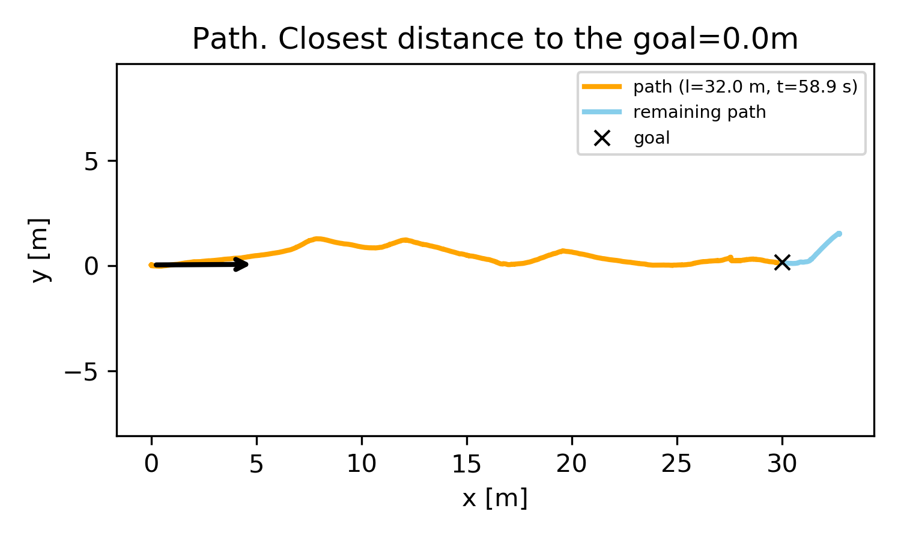
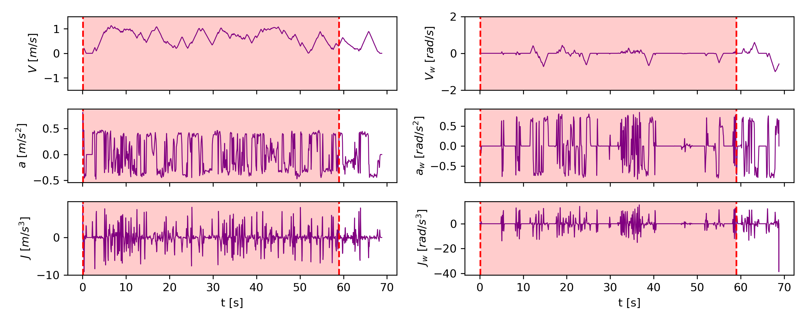

Research Assistant at Learning Algorithms and Systems Laboratory (LASA), EPFL since Oct. 2021 Supervisor: Dr. Diego Felipe Paez Granados, and Prof. Aude Billard
Table of Contents
Demo
Background
In this work, we will create a dataset of mobile robot navigation around pedestrians from experimental data of a personal mobility device navigating autonomously around pedestrians in the streets of center Lausanne.
The focus will be to assess people navigation behavior around the robot by extracting trajectories and motions. I aim to build a detecting, tracking, and motion profile extraction pipeline on lidar and camera data.
Single sequence evaluation
| Metrics | Example |
|---|---|
| Crowd characteristics |  |
| Path efficiency |  |
| Shared control performance |  |
Interclass evaluation

Dataset and toolkit overview
Code available in epfl-lasa/crowdbot-evaluation-tools!